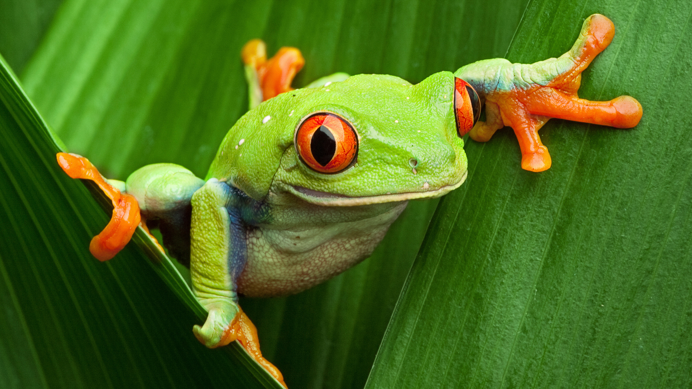

Animals are a major group of organisms, classified as the kingdom Animalia or Metazoa. In general they are multicellular, capable of locomotion and responsive to their environment, and feed by consuming other organisms.
The earliest humans began interacting with other animals they began walking the African savannah over two million years ago. It’s been a long and complicated relationship ever since.
Most people imagine cavemen as hunters, wielding large clubs as they roamed around ancient grasslands, while cavewomen busied themselves gathering berries and other fruits—work that supplied about 70% of the dietary calories. In fact, the earliest cavemen likely did more scavenging than hunting, according to archaeological evidence.

At a site near the shores of Lake Victoria in Kenya, archaeologists discovered stone tools and the cracked skulls of large antelopes, similar in size to wildebeests. The skulls were almost certainly scavenged by ancient humans two million years ago. Animal scavengers like hyenas consume almost all of a carcass, but leave the heads because they lack the ability to crack open the skulls to extract the brains. Nomadic humans, however, mastered that trick. They opened the discarded animal heads to gobbled up the fatty, nutritious, energy-rich brains. In addition, animals’ bone marrow, also fatty and energy rich, was likely an important food source for scavengers. Researchers theorize that these additions to the diet fueled the evolution of modern humans. Without animals, we wouldn’t be who we are.
for more info...

|
|---|
| Information |
|---|
| Horseshoe crabs are one of the oldest species on earth, having been around in more or less the same form since the Ordovician period, some 445 million years ago. |
The difference of a pet and a wild animal is that a pet you can train, feed, and play with.You canctrust a pet not to hurt anyone. A wild animal can hurt people and even kill them.They also live in then wild so they have to look for there own food.
Wild Animals lives in Jungle or Zoo but pet lives with people.